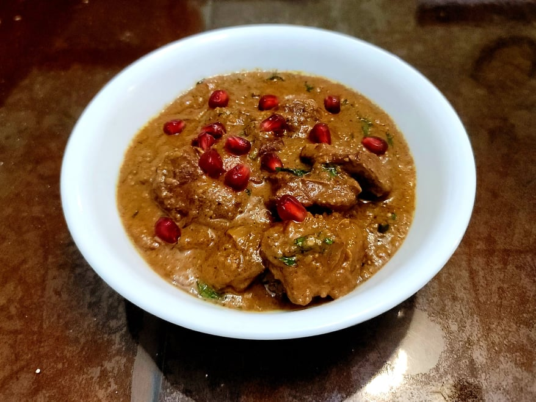

Fesenjan

Ingredients:
- 2 lb Chicken thighs, boneless and skinless, cut into 1 inch cubes
- 8 oz Walnuts, blended in a food processor into a powder
- 1/4 cup Pomegranate Molasses
- Salt, to taste
- Black pepper, to taste
- 2 tbsp Olive oil
- 1 tbsp Butter
- 2 Onions, diced
- 4 cloves Garlic, roughly minced
- 1 tsp Turmeric
- 1 tsp Cumin
- 1/2 tsp Cinnamon
- 1/2 tsp Nutmeg
- 1 Cinnamon stick
- 1/2 tsp Black pepper
- 2 cups Chicken stock or broth
- Optional: 1/2 cup Pomegranate arils
- Optional: 2 tbsp Parsley, chopped
Instructions:
- Season the chicken with salt and pepper to taste. Then heat the olive oil in a large pot over medium heat. Sear the chicken pieces in batches until golden, about 1-2 minutes on each side. Remove chicken from the pot and reserve.
- Add the butter to the pot and let it melt. Add the onion and cook until softened, 5-6 minutes. Then add the garlic and cook for 3-4 more minutes. Add in the turmeric, cumin, cinnamon, nutmeg, and cinnamon stick. Toast for 1-2 more minutes.
- Add in the broth and scrape up any brown bits from the pot. Add pomegranate molasses, the seared chicken, ground walnuts, and about 1 teaspoon salt, or to taste. Stir everything together and bring to a boil before reducing to a simmer. Cover and let simmer for 45 minutes, stirring about every 15 mins.
- Remove cover and let simmer for 10-15 more minutes to let thicken.
- Remove from heat and mix in pomegranate and parsley if using. Serve immediately.